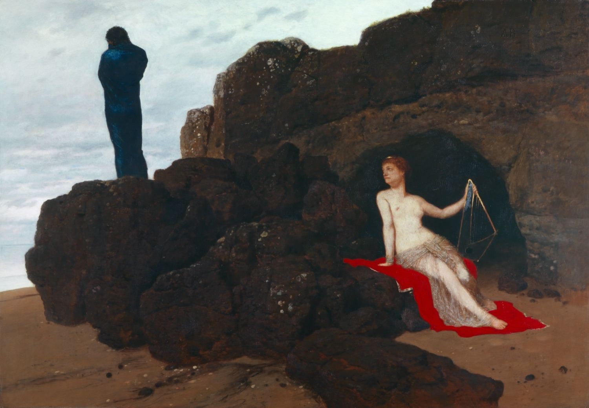
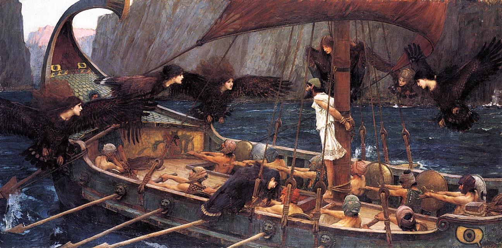

Odysseus gets back to Ithaca in Book 13. Eleven books remain. His house is full of men who want to marry his wife and take his place, and he enters it disguised as a beggar. Reaching the island is only part of coming home.
He has been away for twenty years, ten fighting at Troy and ten trying to return. Penelope has raised their son, Telemachus, while keeping her suitors waiting. They consume the household's supplies and plot to kill the son. Books 13 to 16
The poem begins near the end of this absence. Odysseus is detained on Calypso's island; the first four books follow Telemachus looking for news of him. Later, among the Phaeacians who will carry him home, Odysseus tells the adventures of the Cyclops and the Sirens. He is our narrator for these episodes, including the mistakes he admits making. Books 9 to 12
His first description is polytropos, a Greek word meaning "of many turns." It can suggest resourcefulness or much wandering. The poem's actual first word is andra, "man." These openings cover different amounts of the first two Greek lines:
ἄνδρα μοι ἔννεπε, μοῦσα, πολύτροπον…Book 1, line 1 · polytropon describes the man
- The man, O Muse, inform, that many a way
Wound with his wisdom to his wished stay;Chapman, c. 1615 - The man for wisdom's various arts renown'd,Fenton, Pope edition, 1725
- Tell me, O Muse, of that ingenious hero who travelled far and wideButler, 1900
- Tell me, O Muse, of the man of many devicesMurray, 1919
- Sing in me, Muse, and through me tell the story
of that man skilled in all ways of contending,Fitzgerald, 1961 - Tell me, Muse, of the man of many ways, who was driven
far journeys,Lattimore, 1967 - Sing to me of the man, Muse, the man of twists and turnsFagles, 1996
- Tell me about a complicated man.Wilson, 2017
Fenton emphasizes wisdom; Murray emphasizes ingenuity. Fagles' "twists and turns" could describe the journey or the person making it. Wilson's "complicated" leaves his character open to judgment. The Greek word's meaning is disputed.
This guide follows eight scenes in Emily Wilson's 2017 translation, with comparisons at two passages. Wilson uses iambic pentameter, a five-beat English verse line, and keeps the Greek poem's total line count. Greek verse has six metrical units per line, built from long and short syllables rather than English stresses. Wilson's edition

Stop 1 / The opening
A complicated man
Emily Wilson / Book 1, lines 1 to 10
Tell me about a complicated man.Muse, tell me how he wandered and was lostwhen he had wrecked the holy town of Troy,and where he went, and who he met, the painhe suffered in the storms at sea, and howhe worked to save his life and bring his menback home. He failed to keep them safe; poor fools,they ate the Sun God's cattle, and the godkept them from home. Now goddess, child of Zeus,tell the old story for our modern times.
The opening blames the crew's deaths on their own folly, specifically eating the Sun God's cattle. During the adventures, Odysseus sometimes protects them and sometimes exposes them to danger they wanted to avoid. The cause given for their final shipwreck does not explain every death along the way. 1.1 to 10
His talent is metis, practical cunning. He can invent a false identity and keep it consistent under questioning. Athena, the goddess who helps him, admires his ability to deceive, even when he tries it on her. 13.287 to 310
What he wants is nostos, homecoming. Calypso offers him immortality if he stays with her. He admits that Penelope cannot equal a goddess in beauty, then says he still wants to return. By day he sits on the shore grieving; at night he is an unwilling lover beside a willing one. Calypso releases him only after Hermes brings an order from Zeus. 5.151 to 227
Stop 2 / The Lotus-Eaters
The men who stop wanting to return
Emily Wilson / Book 9, lines 91 to 98, excerpt
The scouts encountered humans, Lotus-Eaters,who did not hurt them. They just shared with themtheir sweet delicious fruit. But as they ate it,they lost the will to come back and bring newsto me. They wanted only to stay there,feeding on lotus with the Lotus-Eaters.They had forgotten home. I dragged them backin tears, forced them on board the hollow ships, …
The voyage begins with a raid. Leaving Troy, Odysseus and his men sack Ismarus, kill its defenders, and divide the women and goods. They stay too long, the neighboring Cicones counterattack, and men die. Storms then drive the survivors to the Lotus-Eaters. 9.39 to 104
Odysseus sends two scouts and a herald inland. The locals offer them lotus, and eating it makes them forget the return. They want to stay. Its identity as a real plant is uncertain.
Odysseus drags the men back while they cry, ties them beneath the rowing benches, and orders everyone else aboard before they can eat. He forces them to leave people who have welcomed them.
On this shore the men could stay alive and never see their families again.
Stop 3 / The Cyclops
Nobody blinds the giant
Emily Wilson / Book 9, lines 364 to 366
Cyclops, you asked my name. I will reveal it;then you must give the gift you promised me,of hospitality. My name is Noman.
Odysseus enters Polyphemus' cave while its owner is out. His men urge him to take the cheese and livestock and leave. He stays to meet the owner and receive a guest-gift, a decision he later admits was a mistake. 9.216 to 230
Polyphemus returns, rolls a huge stone across the entrance, and eats two men. He will eat six before the escape. Odysseus considers killing him in his sleep, then realizes that nobody else could move the stone. They need him alive long enough to open the door. 9.288 to 344
The expected guest-gift comes from xenia, the obligations between host and guest, protected by Zeus. Polyphemus rejects that protection and promises to eat Odysseus last. By then Odysseus has given him strong wine and a false name. Once he falls asleep, the men drive a heated wooden stake into his eye.
Other Cyclopes hear the screams and ask who is attacking him. Polyphemus says Noman is killing him. They understand him to mean nobody, advise him to pray, and leave. The survivors then escape beneath the sheep as Polyphemus feels their backs at the entrance.
Once offshore, Odysseus shouts his real name despite his crew's protests. Polyphemus can now ask his father Poseidon to punish the right man. His prayer specifies a late return, with every companion lost and trouble waiting at home. 9.491 to 536
The false name in six translations
These versions render Polyphemus' reply at Greek 9.408. The name Outis sounds like "no one." In the neighbors' questions and reply, me tis, another way to say "no one," echoes metis, cunning. Odysseus then celebrates his name and his cunning together. The second echo is harder to carry into English. 9.403 to 414
Fitzgerald's spelling makes an ordinary word look like a name. Butler says fraud and force; Lattimore says force or treachery; Fagles and Wilson explicitly deny force. Each gives the neighbors a slightly different report of the attack.
Stop 4 / The dead
Achilles would rather be alive
Emily Wilson / Book 11, lines 488 to 491
Odysseus, you must not comfort mefor death. I would prefer to be a workman,hired by a poor man on a peasant farm,than rule as king of all the dead.
After more losses at sea, the crew reach Circe, a goddess who turns men into pigs. With Hermes' help, Odysseus makes her restore them. They stay a year. When they finally ask to leave, Circe sends them to consult the dead prophet Tiresias. Odysseus sails to the edge of Ocean, digs a trench, and sacrifices sheep; the dead gather around the blood. Books 10 and 11
Among them is his mother, Anticleia, whose death he hadn't known about. He tries three times to embrace her, and three times she passes through his arms. 11.204 to 224
Then he meets Achilles, the warrior at the center of the Iliad. In that poem, Achilles describes a choice between a short life with lasting fame and a long life without it. Odysseus assumes the fame has compensated him: he was honored like a god alive and now has power among the dead. Achilles rejects the consolation. He would rather work for a man who has little to live on. 11.467 to 491
Achilles next asks about his father and son. When Odysseus tells him how bravely his son fought at Troy, Achilles strides away delighted. His wish to be alive has not stopped him caring about his son's fame as a warrior. 11.492 to 540
What kind of work would Achilles accept?
These versions correspond to Greek 11.489 to 491. English choices range from "slave" and "thrall" to "hireling" and "workman." The Greek verb concerns hiring oneself out; it does not itself call the worker an owned slave.
Broome's "bread" and Fitzgerald's "iron rations" give the worker a meager diet. Wilson's "workman" suggests less humiliation than Broome's "slave." Even in the version with the least harsh work, Achilles would accept it to be alive.
Stop 5 / The Sirens
The Sirens promise knowledge
Emily Wilson / Book 12, lines 183 to 191
Odysseus! Come here! You are well-knownfrom many stories! Glory of the Greeks!Now stop your ship and listen to our voices.All those who pass this way hear honeyed song,poured from our mouths. The music brings them joy,and they go on their way with greater knowledge,since we know everything the Greeks and Trojanssuffered in Troy, by gods' will; and we knowwhatever happens anywhere on earth.
The Sirens call Odysseus by name and promise an account of the war he fought in. They claim to know everything that happened at Troy and everything happening on earth. The song appeals to his curiosity and his wish to hear his own fame sung.
The Sirens claim that listeners leave happy and better informed. Circe has warned that anyone who approaches them fails to return to his family. Bones and rotting flesh surround their meadow. 12.39 to 54
Circe also supplies the plan. Odysseus should stop his men's ears with wax; if he wants to listen, they should bind him to the mast and tighten the ropes if he asks to be freed. He follows her instructions. When the song makes him signal for release, Eurylochus and Perimedes add knots while the others keep rowing. The plan works because the crew obey the earlier order when their captain wants to withdraw it. 12.158 to 200

Stop 6 / Scylla and Charybdis
The passage that costs six men
Emily Wilson / Book 12, lines 109 to 111
Row fast, and steer your ship alongside Scylla,since it is better if you lose six menthan all of them.
Beyond the Sirens, Circe describes two routes. One leads past the Wandering Rocks, which only the Argo has passed, with divine help. The other runs between Scylla and Charybdis. On that route, Scylla's six heads can seize six sailors; Charybdis can swallow the whole ship. Circe recommends keeping close to Scylla. 12.55 to 126
Odysseus asks whether he can avoid the whirlpool and fight the monster. Circe tells him Scylla is immortal. Stopping to arm himself could give her time to take another six men.
He withholds the warning about Scylla from the crew because he fears they would abandon their oars and hide below. That is his decision, not an instruction from Circe. He also puts on his armor and carries two spears, despite her warning. As they watch Charybdis, Scylla snatches six of his strongest men. They call his name while she eats them. He describes it as the most pitiful sight of his wanderings. 12.223 to 259
Steering toward Scylla preserves the rest of the crew for now. The men who die weren't warned, and their captain's weapons cannot save them.
The survivors land on the Sun God's island. Bad weather traps them, their food runs out, and they slaughter the forbidden cattle while Odysseus sleeps. At the Sun God's demand, Zeus wrecks the ship. Odysseus alone survives and eventually reaches Calypso. 12.260 to 453
Stop 7 / The bow
Penelope sets the contest
Emily Wilson / Book 21, lines 51 to 55, excerpt
and reached to lift the bowdown from its hook, still in its shining case.She sat down on the floor to take it out,resting it on her lap, and started sobbingand wailing as she saw her husband's bow.
The Phaeacians deliver Odysseus to Ithaca while he sleeps. Athena disguises him as an old beggar, and he goes first to Eumaeus, his swineherd. Telemachus joins them; father and son reunite and plan the attack. Odysseus later enters his own hall and endures the suitors' insults while deciding whom he can trust. Books 13 to 20
Penelope has delayed remarriage by saying she must finish a burial shroud for Odysseus' father. She weaves by day and undoes the work at night, until someone exposes the trick. Now she offers to marry the man who strings her husband's bow and shoots through a row of twelve axes. The arrangement of the axes remains disputed; the text gives too little detail to settle its mechanics. 19.137 to 156; 21.68 to 79
Telemachus nearly strings the bow, but his father signals him to stop. The suitors fail, and postpone their attempts. When the beggar asks for a turn, they oppose it because they fear the humiliation of his success. Penelope supports letting him try, while making clear that winning would not entitle this stranger to marry her. Telemachus sends her upstairs before the bow reaches Odysseus. 21.124 to 135; 257 to 358
Emily Wilson / Book 21, lines 407 to 413, excerpts
as easilyas an experienced musician stretchesa sheep-gut string around a lyre's pegand makes it fast
strung the great bow. He held it in his right handand plucked the string, which sang like swallow-song,a clear sweet note.
Odysseus strings the bow, plucks it, and shoots through the axes while still seated. This arrow completes the contest. His next will kill Antinous. The suitors do not recognize the beggar as Odysseus until he tells them who he is in Book 22. 21.406 to 434; 22.1 to 41
Stop 8 / The return inside the house
Penelope needs proof
Emily Wilson / Book 22, lines 1 to 4
Odysseus ripped off his rags. Now naked,he leapt upon the threshold with his bowand quiverfull of arrows, which he tippedout in a rush before his feet, and spoke.
Odysseus shoots Antinous in the throat while he drinks. At first the suitors think it is an accidental killing. After he announces his identity, Eurymachus blames the dead Antinous and offers compensation. Odysseus refuses. He and his allies have removed the hall's weapons and secured the doors, but Melanthius, a goatherd, brings armor and spears to the suitors. The killing becomes an armed fight; Athena intervenes on Odysseus' side. 22.8 to 240
The singer Phemius and the herald Medon are spared after Telemachus says they are innocent. Twelve enslaved women receive no such protection. Eurycleia identifies them as having slept with the suitors; Odysseus orders them to clean the hall and then be killed. Telemachus hangs them. The men also mutilate Melanthius. As slaves, the women had little power to refuse the suitors; their reported sexual relationships do not establish willing participation. 22.330 to 477
Penelope still needs proof that this is her husband. Eurycleia's report of his return and the scar on his leg have not convinced her. Penelope says they have signs that only the two of them know. She tells Eurycleia to make up his bed outside the room he built. 23.1 to 180
Emily Wilson / Book 23, lines 189 to 192, excerpt
Inside the court there grew an olive treewith delicate long leaves, full-grown and green,as sturdy as a pillar, and I builtthe room around it.
Odysseus is furious at the idea that someone has moved it. He describes building the bedroom around an olive tree, cutting off its branches, and shaping its rooted trunk into a bedpost. Moving the finished bed would require cutting that trunk. Penelope recognizes his knowledge of the construction. She says that only they and Actoris, the slave who guarded their room, knew the secret. Then she embraces him. 23.181 to 232
Penelope says she feared a stranger might deceive her. She accepts the man who remembers how he built their bedroom, after refusing to trust his appearance and other people's assurances.
The poem continues after the reunion
Odysseus has told Penelope that Tiresias requires another journey. He must carry an oar inland until he meets people who do not recognize it, then sacrifice to Poseidon. Homecoming does not finish his obligations to the god he angered. 23.248 to 284
In Book 24 he reunites with his father, Laertes, while the suitors' relatives gather to take revenge. Laertes kills Antinous' father. More fighting is about to follow when Athena, acting on Zeus' decision, stops it and imposes a settlement. The poem ends with peace between Odysseus and the surviving families, secured by a goddess. It gives no account of how they live together afterward. 24.412 to 548
The text and the choices here
The featured passages are from Emily Wilson's The Odyssey (W. W. Norton, 2017). Their line references follow Wilson. Comparisons give the corresponding Greek lines; translators divide and expand the verse differently. Shortened passages are labeled as excerpts.
The poem comes from a Greek oral tradition. Repeated phrases such as "rosy-fingered dawn" fit particular positions in its verse. Milman Parry and Albert Lord studied comparable methods among South Slavic singers: performers composed using inherited phrases and scenes, rather than simply reciting a fixed text from memory. Their research helps explain Homeric repetition. It cannot tell us exactly how the surviving Odyssey became a written poem. The Milman Parry Collection
A common dating places the Odyssey in the late eighth or early seventh century BCE. "Homer" is its traditional attribution; whether one person composed both it and the Iliad remains unresolved. The explanations here are readings of selected scenes, not a recovered statement of the poet's intentions. Wilson on the poem and translation
- Early English versions: George Chapman (c. 1615); the Pope edition (1725 to 1726); Samuel Butler (1900); and A. T. Murray (1919). Elijah Fenton translated Book 1 and William Broome translated Book 11 for the Pope edition. Pope's collaborators
- Modern comparisons: Robert Fitzgerald (1961), Richmond Lattimore (1967), and Robert Fagles (1996). The comparisons show their choices at particular passages.
- Commentary: Thomas Van Nortwick's Dickinson College essays, especially on Books 9, 11, and 12, for narrative context and Greek wordplay. Wilson's essay on the women of the poem discusses Penelope's constrained choices and the enslaved women killed in Book 22.
The collection image is the Siren Vase, an Athenian red-figure stamnos dated about 480 to 470 BCE, several centuries later than the poem's usual dating. The paintings are identified beside their images.